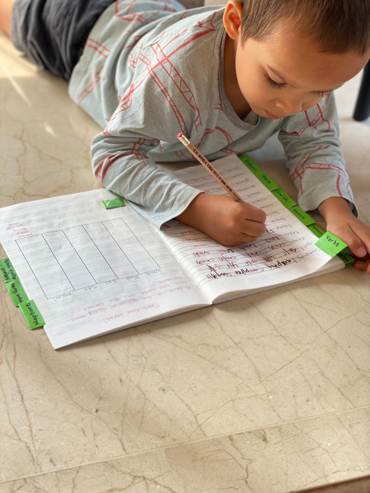

The S.P.A.R.K. framework at a glance
- S — Systematic Instruction: learning built step by step.
- P — Personalized Learning: every learner is different.
- A — Academic Language: moving beyond conversational English.
- R — Reading Mastery: the foundation of academic success.
- K — Knowledge Building: building understanding of the world.
At Spark, we believe that strong outcomes are not the result of luck, talent, or simply spending more time in class. Real progress comes from a clear educational philosophy, evidence-based teaching practices, and a consistent approach to learning.
That is why every lesson, program, and learning pathway at Spark is guided by our S.P.A.R.K. framework.
The Spark Method combines five essential elements that support long-term literacy, language development, and academic success.
Together, these principles help students become confident readers, capable writers, effective communicators, and independent learners.

What Is the S.P.A.R.K. Framework?
Learning Built Step by Step
Students learn best when new knowledge is introduced in a logical sequence.
Rather than teaching isolated skills or jumping randomly between topics, Spark follows structured learning pathways that build understanding gradually over time.
Each new skill is connected to previous learning, allowing students to strengthen existing knowledge while developing new abilities.
For example:
- Sounds are taught before words.
- Words are taught before sentences.
- Sentences are taught before paragraphs.
- Paragraphs are taught before essays.
This systematic approach reduces confusion, improves retention, and helps students develop confidence as they experience success at every stage of learning.
What Parents Notice
Students become less reliant on guessing and develop a stronger understanding of how language works.
Every Learner Is Different
No two students arrive with the same strengths, challenges, experiences, or goals.
Some students need support with reading fluency. Others require help organizing ideas in writing. Some may have strong speaking skills but limited academic vocabulary.
At Spark, instruction is adapted to meet individual needs.
Teachers continuously monitor progress and adjust support based on each student's development.
Personalization may include:
- Individual learning goals
- Differentiated activities
- Targeted feedback
- Additional support in specific skill areas
- Adjusted pacing when necessary
This ensures that students receive the right level of challenge while continuing to experience success.
What Parents Notice
Students receive support that addresses their specific needs rather than following a one-size-fits-all approach.
Moving Beyond Conversational English
Many students can communicate comfortably in everyday situations but struggle when faced with academic tasks.
They may understand conversations yet find it difficult to:
- Read complex texts
- Write detailed responses
- Explain their thinking
- Use subject-specific vocabulary
- Participate in academic discussions
Academic success requires a different type of language.
At Spark, students learn the vocabulary, sentence structures, and communication skills needed for school, examinations, and future academic study.
The Foundation of Academic Success
Reading is one of the strongest predictors of educational achievement.
Students who read well generally learn more efficiently, acquire vocabulary more quickly, write more effectively, and perform better across a wide range of subjects.
That is why reading sits at the center of the Spark Method.
Reading instruction extends beyond simply recognizing words on a page.
Students develop:
- Phonics and decoding skills
- Reading accuracy
- Reading fluency
- Vocabulary knowledge
- Reading comprehension
- Critical reading skills
- Analytical thinking
As students grow, reading becomes a tool for learning rather than a barrier to learning.
Strong readers become stronger learners.
What Parents Notice
Students become more confident readers, tackle challenging texts more independently, and engage more actively with learning.
Building Understanding of the World
Reading and writing skills are important, but students also need knowledge.
The more students know about the world, the easier it becomes for them to understand new information, make connections, and think critically.
At Spark, students engage with a wide range of topics, texts, and ideas that expand their background knowledge while strengthening literacy skills.
Students may explore:
- Science topics
- Historical events
- Literature
- Current issues
- Cultural perspectives
- Real-world problems
This approach helps students develop curiosity, confidence, and the ability to engage thoughtfully with complex ideas.
Knowledge supports comprehension, and comprehension supports learning.
What Parents Notice
Students become more curious, ask deeper questions, and demonstrate stronger understanding when discussing new topics.



See the Spark Method in Action
Book a free assessment and we will show you exactly where your child sits on each of the five S.P.A.R.K. pillars — and what the next step looks like.